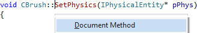

Document Method
Add a comment block before a method using Document Method in the Quick Action and Refactoring menu (Shift+Alt+Q). Document Method is available from the definition of any method, and in C/C++, from any declaration.

Change the default comment by editing the VA Snippet called Refactor Document Method. Open the snippet editor via VAssistX | Tools | Edit VA Snippets, or via the context menu in the text editor.

VA Snippets can contain reserved strings, e.g. $MethodArgName$, that expand when invoked.
Learn more.